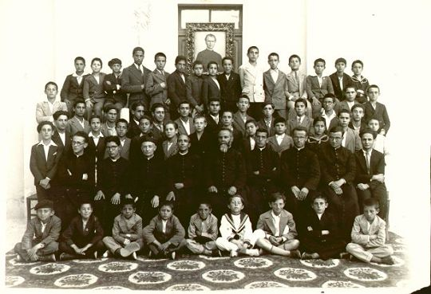
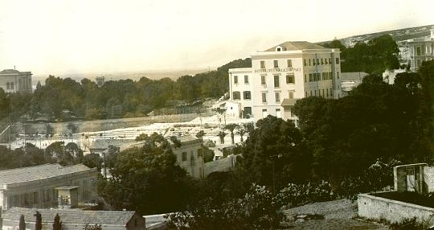

dal 1912 al 1948
1. Don Mario Piu e i cooperatori salesiani
Il desiderio e l'urgenza di avere i Salesiani a Cagliari risale al 1879. Furono gli arcivescovi della città, monsignor Balma e poi monsignor Berchialla, a chiedere con insistenza a don Bosco, come già detto, la fondazione dell'Opera salesiana nel capoluogo sardo, presentandogli il problema della gioventù "abbandonata". Nell'aprile del 1898 don Luigi Rocca e don Tommaso Pentore, dopo il sopralluogo a Lanusei per trattare di persona la fondazione del collegio, si recarono a Cagliari "dove ebbero festose accoglienze da un gruppo di una ventina di antichi alunni del collegio di Alassio e li attendeva il rev.mo don Uras, rappresentante monsignor arcivescovo, che nella sua squisita cortesia mandava la sua carrozza per condurli in episcopio, dove con affetto tutto paterno accolse i figli di Don Bosco e offrì¡ loro generosa ospitalità. "In Cagliari la conferenza, che si tenne in S. Giuseppe Calasanzio, fu presieduta da mons. arcivescovo ed onorata dalla presenza dell'intero Capitolo della cattedrale. Un numero stragrande di popolo riempiva le vaste navate della chiesa". Nella conferenza don Pentore disse: "Fra tutte le regioni d'Italia la sola Sardegna non ha un Istituto Salesiano. Ebbene, le aspirazioni di tanti cattolici ben presto saranno appagate ed il primo Collegio Salesiano sorgerà nella simpatica cittadina di Lanusei nel prossimo settembre. Ed anche Cagliari fra non molto avrà il suo Ospizio Salesiano, superata qualche piccola difficoltà che ora vi si frappone". Infatti neppure le richieste di mons. Paolo Maria Sercí, arcivescovo di Cagliari, ebbero  esito favorevole, perché "scarseggiava il personale salesiano ed urgevano altre opere in continente, già prenotate e promesse da anni", e perciò, da Torino i superiori continuavano a rispondere, come aveva già detto don Bosco, di attendere con fiducia. "I buoni Cooperatori Salesiani di Cagliari non disarmarono e continuarono a pregare il Signore e la Vergine Ausiliatrice. Erano essi numerosissimi, ma non avevano un assistente ecclesiastico che ne curasse l'organizzazione e lo sviluppo delle varie attività", e perciò don Rocca e don Pentore proposero a mons. Serci di scegliere un giovane sacerdote che si assumesse l'incarico di direttore diocesano dei cooperatori. Fu scelto don Mario Píu, allora neo sacerdote, che si adoperò per radunare i numerosi cooperatori e cooperatrici (circa 500), che, da lui guidati, crebbero ancora di numero. I mezzi di formazione erano le riunioni, le feste e le conferenze: in breve tempo, per tali iniziative, particolare solennità fu data alle feste di S. Francesco di Sales e di Maria Ausiliatrice, che divenne tra le più rinomate a Cagliari. Puntualmente don Piu inviava al "Bollettino Salesiano" relazioni delle attività che promuoveva tra i cooperatori. Tali iniziative, nell'arco di pochi anni, riuscirono a "sensibilizzare i cooperatori, i devoti e poi la cittadinanza tutta sulla necessità di andare incontro ai bisogni della gioventù abbandonata della città, dando l'opera loro (preghiere, obolo, iniziative) per la realizzazione di un Oratorio festivo da affidare ai Salesiani di Don Bosco". Nel giugno 1902, dopo l'inaugurazione del collegio di Lanusei, sostò a Cagliari il primo successore di don Bosco, don Rua, "fatto segno alle più cordiali manifestazioni di stima e venerazione da parte dell'arcivescovo, mons. Pietro Balestra, che lo volle ospite in seminario, del Capitolo al completo e dei fedeli numerosissimi. Il giorno 18 celebrò all'altare della Vergine Ausiliatrice nella chiesa di S. Antonio Abate gremitissima. Più tardi vi tenne una conferenza ascoltatissima e nel pomeriggio una ai seminaristi nel seminario. Visitò pure il santuario della Vergine di Bonaria, parlò ai fedeli e diede la benedizione col Santissimo. A sera tardi nell'aula teologale del seminario si tenne una acclamatissima accademia musico-letteraria in onore dell'illustre ospite. Facevano corona al festeggiato l'arcivescovo, il sindaco prof. Piccinelli, il provveditore cav. Pili, il prof. Gaetano Desogus... e moltissime personalità". "La visita di don Rua sollevò grande entusiasmo e fece aumentare la speranza che presto anche Cagliari avrebbe avuto un'Opera di don Bosco".
esito favorevole, perché "scarseggiava il personale salesiano ed urgevano altre opere in continente, già prenotate e promesse da anni", e perciò, da Torino i superiori continuavano a rispondere, come aveva già detto don Bosco, di attendere con fiducia. "I buoni Cooperatori Salesiani di Cagliari non disarmarono e continuarono a pregare il Signore e la Vergine Ausiliatrice. Erano essi numerosissimi, ma non avevano un assistente ecclesiastico che ne curasse l'organizzazione e lo sviluppo delle varie attività", e perciò don Rocca e don Pentore proposero a mons. Serci di scegliere un giovane sacerdote che si assumesse l'incarico di direttore diocesano dei cooperatori. Fu scelto don Mario Píu, allora neo sacerdote, che si adoperò per radunare i numerosi cooperatori e cooperatrici (circa 500), che, da lui guidati, crebbero ancora di numero. I mezzi di formazione erano le riunioni, le feste e le conferenze: in breve tempo, per tali iniziative, particolare solennità fu data alle feste di S. Francesco di Sales e di Maria Ausiliatrice, che divenne tra le più rinomate a Cagliari. Puntualmente don Piu inviava al "Bollettino Salesiano" relazioni delle attività che promuoveva tra i cooperatori. Tali iniziative, nell'arco di pochi anni, riuscirono a "sensibilizzare i cooperatori, i devoti e poi la cittadinanza tutta sulla necessità di andare incontro ai bisogni della gioventù abbandonata della città, dando l'opera loro (preghiere, obolo, iniziative) per la realizzazione di un Oratorio festivo da affidare ai Salesiani di Don Bosco". Nel giugno 1902, dopo l'inaugurazione del collegio di Lanusei, sostò a Cagliari il primo successore di don Bosco, don Rua, "fatto segno alle più cordiali manifestazioni di stima e venerazione da parte dell'arcivescovo, mons. Pietro Balestra, che lo volle ospite in seminario, del Capitolo al completo e dei fedeli numerosissimi. Il giorno 18 celebrò all'altare della Vergine Ausiliatrice nella chiesa di S. Antonio Abate gremitissima. Più tardi vi tenne una conferenza ascoltatissima e nel pomeriggio una ai seminaristi nel seminario. Visitò pure il santuario della Vergine di Bonaria, parlò ai fedeli e diede la benedizione col Santissimo. A sera tardi nell'aula teologale del seminario si tenne una acclamatissima accademia musico-letteraria in onore dell'illustre ospite. Facevano corona al festeggiato l'arcivescovo, il sindaco prof. Piccinelli, il provveditore cav. Pili, il prof. Gaetano Desogus... e moltissime personalità". "La visita di don Rua sollevò grande entusiasmo e fece aumentare la speranza che presto anche Cagliari avrebbe avuto un'Opera di don Bosco".
2. Cagliari "vuole" i Salesiani
Il 29 gennaio 1904, giorno della festa di S. Francesco di Sales, don Píu, parlando ai cooperatori, propose loro di raccogliere i fondi per l'acquisto del terreno sul quale sarebbe sorto l'edificio per l'Oratorio salesiano, che egli chiamò il "suo proprio grande ideale". La proposta suscitò entusiasmo: il giorno stesso don Píu raccolse delle offerte "tanto da poter avere già assicurati 40 mq" ed aprì¡ una sottoscrizione ne "La Sardegna Cattolica". In quegli stessi giorni gli fece visita nella chiesa di S. Eulalia il sig. Gaetano Garzia, che don Piu considerava il vero fondatore dell'Opera Salesiana di Cagliari, e gli disse: "Ho visto che Lei sta lavorando per far venire i Salesiani a Cagliari. Lavori, lavori, perché questa è un'opera troppo necessaria. Io ora Le offro 3.000 lire. Non sarà questa l'ultima offerta. Solo, La prego, nel comunicare l'offerta alla stampa, di tacere il mio nome. Continuò infatti a soccorrere l'iniziativa con altre frequenti e vistose offerte. L'arcivescovo, mons. Pietro Balestra, seguì, e incoraggiò l'iniziativa e, invitato da don Piu, scrisse egli stesso una lettera ai cooperatori salesiani per sollecitarli a condurre a termine l'opera intrapresa, sottolineando l'urgenza che vi era a Cagliari sia di un Oratorio salesiano, "opera di così grande importanza da dover essere promossa con vivo interessamento da tutti coloro che sentono di avere cuore per il vero bene della società", sia "di una scuola dedicata specialmente a educare i figli del popolo alla religione e al lavoro". Qualche mese dopo don Piu scrisse al "Bollettino Salesiano e comunicò che si era potuto far poco, perché, nonostante la buona volontà dei cooperatori, i mezzi erano scarsi. Chiese perciò a tutti i cooperatori di contribuire "con un obolo anche tenue", ma "subito", poiché a Cagliari l'Oratorio salesiano non solo era un'opera "vantaggiosa, ma sommamente necessaria". Lo stesso arcivescovo si fece, a sua volta, silenzioso mendicante per l'Opera salesiana: "Quante volte trovai che mi aveva preceduto presso famiglie facoltose, dalle quali sapeva ottenere vistose offerte che poi passava a me". L'entusiasmo per l'iniziativa, che, pur tra fatiche e difficoltà andava avanti con costanza, si rinnovò con la celebrazione del 1 Congresso Mariano Sardo, che si tenne a Cagliari nel dicembre del 1904, in occasione del 50° della definizione del dogma dell'Immacolata". Si tennero conferenze sulle Opere salesiane ed il canonico mons. Miglior svolse il tema: "Una provvidenza dell'Immacolata: l'Oratorio festivo salesiano da stabilirsi a Cagliari". Venne sottolineata l'importanza della "salvezza" della gioventù, si costituì un comitato pro Oratorio e da parte del congresso si espresse "un solennissimo ed impegnativo voto perché l'Oratorio festivo divenisse presto realtà". Si voleva che l'Oratorio salesiano di Cagliari fosse il primo di altri, che sarebbero sorti successivamente nelle altre città "sedi vescovili", o almeno nei principali centri dell'Isola. Fu perciò unanime la richiesta dell'episcopato sardo per l'inizio dell'Opera salesiana a Cagliari. Negli anni successivi si intensificò la raccolta delle offerte e si celebrarono con maggiore solennità le feste di S. Francesco di Sales e di Maria Ausiliatrice. Nel maggio del 1907 mons. Cagliero, l'apostolo della Patagonia, visitò Cagliari e si incontrò con i cooperatori ai quali tenne una conferenza ed incoraggiò don Piu ed il comitato pro Oratorio ad iniziare qualcosa. Si pensò quindi alla scelta del terreno che si acquistò da un certo Raimondo Leone, il quale, conosciute le intenzioni di don Piu, vendette 2700 mq per L. 7000, cioè circa L. 2,60 al mq anziché a L. 5,00 come previsto. La sera del 2 luglio 1907 a casa di don Piu il notaio Eraclio De Magistris, gratuitamente, stipulò l'atto di compravendita alla presenza di due testimoni, il sac. dr. Efisio Argiolas e don Giuseppe Uras. Subito dopo l'acquisto del terreno, l'ispettore dei Salesiani, don Conellí, prospettò la necessità urgente di acquistare un altro terreno attiguo per le esigenze del futuro Oratorio, che diversamente sarebbe stato privo di cortile per le ricreazioni. E fu così che si pensò di acquistare il giardino attiguo di proprietà dell'avvocato Antonio Fadda, con l'annesso villino in viale Ospizi. L'avvocato Fadda aderì¡ al desiderio di don Piu molto benevolmente. solo però nel 1911 si addivenne alla compravendita per la somma di 23.800 lire, da pagarsi a rate annuali fino al 1917 con gli interessi annessi. Don Piu, dietro garanzia dei superiori salesiani di Torino, contrasse un prestito di 5.000 lire con la contessa Nieddu Serra e si impegnò, con le offerte che man mano sarebbero affluite, a far fronte agli impegni assunti. Quelli furono anni di ansie e preoccupazioni, anche per i disagi della guerra mondiale sopravvenuta. La fiducia di don Piu fu messa a dura prova, ma brillò sempre in lui costante la fiducia nella Provvidenza. Allo scadere infatti degli impegni poté chiudere la partita con onore. Dopo l'invio da Torino del progetto di massima, preparato da don Luigi Rocca, si incominciarono presto i lavori di scavo e la posa della prima pietra avvenne nel corso dei festeggiamenti in onore della Vergine di Bonaria, che il 13 settembre 1907, con decreto della Sacra Congregazione dei Riti, era stata dichiarata da Pio X Patrona della Sardegna. "Festa dolcissima e commovente" fu quella che si svolse il 29 aprile 1908 con tutta solennità in Viale degli Ospizi, ove per le offerte dei buoni e mercé lo zelo fervoroso e la provvida ed efficace azione del teologo Mario Piu, sorgerà il tanto atteso Oratorio. "Il vasto locale presentava un colpo d'occhio ammirabile. Numerose aste sostenevano le bandiere multicolori che agitate dal vento portavano una nota gaia e festosa. Su di un bellissimo palco erano disposti i seggi per Eminentissimo Card. Arcivescovo di Pisa e gli altri cospicui personaggi che avrebbero presenziato alla cerimonia, e a destra sorgeva un elegante altarino ove in un panneggiamento rosso campeggiava l'immagine di Maria Ausiliatrice attorniata da una ghirlanda di rose; ai lati stavano i ritratti di Pio X e del Ven. Don Bosco. "Alle 16 30 giunse Sua Eminenza il Card. Maffi accolto da caldi applausi, accompagnato dalle loro Eccellenze Rev.me Mons. Pietro Balestra arcivescovo di Cagliari, Mons. Ingheo, arcivescovo titolare di Anazarba, Mons. Tolu arcivescovo di Oristano, Mons. Canepa vescovo di Galtellì-Nuoro, Mons. Piovella vescovo di Alghero e Mons. Vinati vescovo di Bosa. "Sua Eminenza, insieme coi prelati, sale sul palco, dopo aver stentato alquanto a scindere la folla che gli si assiepava intorno per baciargli l'anello e riceverne la benedizione. È impossibile enumerare tutte le illustri e benemerite persone convenute alla cerimonia. Accanto a Sua Eminenza e le loro eccellenze prendono posto i rev.mi Mons. del Duomo, i membri del Comitato per le feste di Bonaria e i vessilli del Circolo San Saturnino, dell'Operaia Cattolica, della Sant'Ambrogio, della San Giovanni, dei Luigini e dei Figli di Maria. "Come l'E.mo ebbe apposta la firma alla pergamena ed ebbero pur firmato gli Arcivescovi e i Vescovi presenti unicamente al Decano della Metropolitana Mons. Serra, al Vicario Generale Mons. Miglior e al Dott. Mario Piu, il prof. Congiu L'ostia disse, applauditissimo, il discorso di circostanza. Sua Eminenza indossò quindi gli abiti pontificali e procedette alla benedizione della Ia pietra. Il masso discese lentamente fra gli applausi scroscianti, mentre il Cardinale ne seguiva con lo sguardo la discesa verso lo spianato e tracciava con la destra un segno di croce. "La pergamena, che fu racchiusa nel masso con una medaglia in argento raffigurante il Sommo Pontefice, una medaglia con la effigie della Vergine di Bonaria e di Sant'Efisio, una medaglia di Maria Ausiliatrice, una moneta da due lire dell'ultimo conio e qualche altra medaglia, era disegno del bravo giovane Carlo Pintor e recava queste parole dettate da Mons. Serra:"In nomine Domini. Amen. L'anno del Signore 1908 al 29 aprile regnando nella cattedra di San Pietro Pio Papa X; essendo arcivescovo di questa città Fr. Pietro Balestra dei M.C. di San Francesco; Superiore dei Salesiani D. Michele Rua; Sua Em. Rev.ma Pietro Maffi Cardinale di Santa Romana Chiesa, Arcivescovo di Pisa, Primate di Corsica e Sardegna, inviato da S.S. Pio X per
 |
| l'istituto del 1912 viene ampliato nel 1929 |
prendere parte alle solennissime feste in onore della Vergine Incoronata di Bonaria, proclamata Patrona Massima della Sardegna dal Romano Pontefice con decreto della Sacra Congregazione dei Riti del 13 settembre 1907, solennemente benedì e pose la prima pietra del qui erigendo Oratorio Salesiano". "Compiuta la cerimonia, un giovanotto dell'Oratorio umiliò all'E.mo Arcivescovo di Pisa un ricchissimo mazzo di fiori pronunziando alcune gentili parole. Parlò quindi lo zelantissimo teol. D. Mario Piu, che sciolse un inno di caldo entusiasmo al Ven. Fondatore degli Oratori; e a lui tenne dietro il Sig. Conte Sanjust, interrotto e salutato da applausi. In ultimo si avanza sul limitare del palco il Card. Pietro Maffi e la sua parola buona scende dolcemente nei cuori. "In una sintesi mirabile, - scrive l'ottimo "Corriere dell'Isola" del 30 aprile 1908, - Sua Eminenza abbraccia tutte le istituzioni salesiane e dice della loro bontà, della loro opera rinnovatrice e santa, istituzioni fondate dal Venerabile D. Giovanni Bosco "orfanorum pater". Con un'imponente ovazione all'Em.mo Porporato ebbe termine la solenne cerimonia". Dopo la posa della prima pietra, i lavori proseguirono alacremente sotto la direzione gratuita degli ingegneri D. Francesco Floris Thorel, Riccardo Simonetti, Onnis e Mura.
In una relazione del "Bollettino Salesiano" si legge infatti: "chiunque passi per la via degli Ospizi può constatare con quale alacrità si compiano i lavori dell'erigendo Oratorio Salesiano e come il fabbricato sia già a buona altezza". Si sperava infatti di concludere entro il mese di novembre la prima parte della costruzione (cioè quattro piani per una lunghezza di 21 metri, una larghezza di 15,50 metri e un'altezza di oltre 18 metri) e, come continuava il "Bollettino Salesiano", "ciò sarà possibile ove non manchi il concorso dei capitali necessari". Il "Corriere dell'Isola" apri quindi una sottoscrizione e nel solo primo elenco figuravano 2000 lire. Intanto don Piu continuava a raccogliere soldi tramite conferenze, accademie, concerti, lotterie e feste varie, e, d'accordo con i superiori salesiani di Torino e di Roma, con prudenza e insieme con coraggio e intraprendenza seguì i lavori di costruzione " ... tra le ansie e le speranze, tra le gioie e le disillusioni a seconda dell'affluenza delle offerte o della assoluta mancanza delle elemosine". Anche le autorità cittadine si interessarono presso don Piu della casa che si voleva affidare ai Salesiani: il regio subeconomo della città, in particolare, gli chiese delle informazioni a cui don Piu rispose: " ... il movente che fece nascere in molti questo desiderio (dei salesiani a Cagliari) è lo stato di deplorevole abbandono nel quale si trova un gran numero di figli del popolo, i quali, coltivati a tempo e ben educati, potrebbero crescere onesti e utili alla società, anziché andare a popolare le carceri. Lo scopo principale, in una parola, è il bene della gioventù, ma specialmente dei poveri. A loro vantaggio si apriranno scuole gratuite e un ricreatorio". Gli comunicò poi che la cittadinanza aveva prestato "il suo appoggio materiale e morale" e che vi erano state numerose " ... insistenze e premure da parte di molti padri di famiglia, impiegati e professori, ma specialmente di tante povere madri". Nel settembre 1910 don Píu aveva già speso per il terreno e per una parte del fabbricato 35.000 lire ed al giugno 1911 60.000 lire, raggranellate con piccole offerte.
3. La fondazione
Il 4 novembre 1912 giunse a Cagliari don Carlo Rogora come iniziatore dell'Oratorio e per sollecitare il compimento dei lavori: nell'edificio infatti non c'erano ancora ambienti rifiniti e neppure il cortile era in condizioni di poter accogliere i ragazzi. Don Rogora perciò si adattò a dormire nel villino Fadda ed a mangiare in trattoria, ospitato spesso anche da don Piu, al quale dava il suo aiuto nel ministero della parrocchia. In una lettera circolare ai suoi concittadini don Piu annunziò l'inizio dell'Opera salesiana e raccomandò, in particolare ai cooperatori, di aiutare i Salesiani in tutti i modi: questi infatti venivano a Cagliari, " ... perché pressati dalle tante insistenze, ma... senza poter fare assegnamento su qualche sicuro mezzo di sussistenza, ... perché per loro uso erano pronte solo alcune stanzette ed una modesta cappella. Don Piu mise in evidenza come l'attività dei Salesiani a Cagliari era strettamente legata alla collaborazione dei cooperatori: " ... Solo col vostro aiuto, o benemeriti cooperatori, potranno i Salesiani dar prova anche in Cagliari del loro zelo mirabile per la salvezza della gioventù". L'attività salesiana vera e propria cominciò un anno dopo, quando il 13 ottobre 1913 giunsero a Cagliari don Matteo Ottonello come direttore e don Giuseppe Roncagliolo come maestro di terza elementare. Alla fine del mese si aggiunsero il chierico Francesco Fazi come maestro di quarta elementare, il coadiutore Domenico Zanchetta e don Pietro Chevrel, parigino, con l'incarico d'insegnare musica e canto. L'edificio però non era ancora in grado di alloggiarli, perché " ... non era fatto che per un terzo, secondo il disegno.... e, tranne la cappella che era intonacata e una stanzetta al secondo piano, non aveva che i puri muri senza intonaco ... ". Mancava anche la cucina e i Salesiani dovettero adattarsi a prendere i pasti in un ristorante, poco distante dall'istituto. Scrive uno dei primissimi alunni del collegio " ... al termine delle lezioni ... si lasciava il collegio con i quattro o cinque Superiori e per la discesa del viale si raggiungeva la via Porto Scalas in fondo alla quale, e cioè in una delle prime case del corso Vittorio Emanuele, c'era la trattoria "Toscana". Tutti seduti allo stesso tavolo, in una sala interna, superiori ed alunni..., si consumava il pranzo". L'arredamento di parte della casa fu opera della benevolenza dei cagliaritani, come ricorda bene il prof. Bandino, che visse in quel periodo nell'istituto. "La casa mancava completamente di mobili, di letti, di sedie, di qualsiasi arredamento, ma un po'' per volta le buone signore dell'alta aristocrazia cagliaritana, tra le quali la contessa donna Maria Serra, la baronessa Amat, la n.d. Annetta Carboni, la n.d. N'orina Piloni e diverse altre, da Dio ispirate incominciarono a provvedere il nascente istituto di parte dei mobili delle loro stesse case e così presto avemmo tavoli, tavolini, letti, sedie, armadi, quadri ed altro. "La Provvidenza dispose pure in quei giorni che al palazzo della Provincia si dovessero mettere a nuovo gli arredamenti del gran salone dei ricevimenti ed allora, per interessamento del prof. Amerigo Imeroni, docente all'università e assessore comunale, vennero regalati ai salesiani bellissimi tendoni di velluto rosso per finestre e porte, un superbo divano con seggiolini e sedie pure in velluto rosso, un magnifico lampadario per centro salone ed altri mobili ed oggetti di valore che andarono a rifornire il nostro parlatorio da poco rifinito. "Nello stesso tempo si venne a conoscere che alla chiesa di Sant'Agostino, in Stampace, allora trasformata dal municipio in magazzino per vecchi mobili ed oggetti fuori uso, si trovavano molti banchi scolastici, cattedre, lavagne, predelle ecc. dichiarate fuori uso... "Sempre con l'interessamento del prof. Imeroni, del prof. Val entino Martelli, insegnante di matematica al ginnasio "Dettori", e del dott. Aurelio Espis, vice segretario al comune, si ottenne che noi salesiani potessimo a nostra piena libertà scegliere e prendere tutti quegli oggetti e mobili che avessimo giudicati a noi necessari, per cui il nostro istituto fu d'un tratto, alla bella meglio, rifornito di una numerosa attrezzatura scolastica che c'era costata la sola spesa del trasporto".
 |
|
don Purita, direttore negli anni '30 |
4. Il collegio e la scuola
Il direttore, don Matteo Ottonello, il 15 ottobre 1913, due giorni dopo il suo arrivo a Cagliari, con una lettera alla cittadinanza annunciò l'inizio delle attività che i Salesiani intendevano svolgere:i corsi di III e IV elementare, retti da maestri patentati e con l'approvazione dell'autorità scolastica..., un doposcuola per gli alunni delle scuole elementari e tecniche e ginnasiali inferiori. Si offrì inoltre la possibilità di "avere lezioni di lingua latina, greca e francese... e lezioni di pianoforte". La tassa per la scuola elementare era di 5 lire mensili, per il doposcuola di 7 lire e, per quelli che frequentavano scuola e doposcuola 10 lire. "Le lezioni incominciarono e proseguirono con un crescendo sempre più numeroso di alunni". A Cagliari infatti, numerose famiglie, anche nobili, "avevano chiesto di poter affidare ai Salesiani l'educazione dei loro figli, per cui fin dai primi giorni si incominciò a ricevere quei giovanotti a ripetizione". Le scuole elementari erano interne, ma vennero accolti anche una quarantina di ragazzi che frequentavano scuole pubbliche: "a questi si offriva un vero doposcuola, pazienti ripetizioni... e li si accompagnava alle varie scuole". "Primissimi furono: il contino Ignazio Serra, il barone Pietro Amat, il nob. Lucio Carboni, i visconti fratelli Manca di Villahermosa, il giovane Gungui, a cui poi si aggiunsero i fratelli Piloni, Enrico Carboni e tanti altri che al presente sono gloria e vanto della nostra popolazione per scienza, bontà e posizione civile. Nel 1914 si tentò di aprire il collegio cedendo alle dolci pressioni delle famiglie dei giovanotti, che già venivano per le ripetizioni, ed il conte Serra, Gungui, Lucio Carboni, ecc. furono i primi collegiali interni di questo Istituto". Già dagli inizi quindi l'attività dei Salesiani fu intensa. Nel gennaio del 1914 e poi ripetutamente, nei mesi successivi, don Ottonello chiese all'ispettore l'aumento del personale, soprattutto per l'assistenza dei giovani che frequentavano le scuole pubbliche. L'opera educativa infatti tra questi giovani non era semplice e la loro condotta morale e religiosa non soddisfaceva gli educatori, i quali miravano ad avere le scuole interne che assicuravano normalmente risultati migliori. Tuttavia in un solo anno scolastico i Salesiani a Cagliari si acquistarono stima ed apprezzamenti. Don Ottonello infatti nel luglio 1914 poteva comunicare a don Conelli: "L'istituto a quanto si dice e a quanto pare acquista buon nome". Col passare dei mesi le richieste per il collegio aumentarono: l'opera quindi sembrava rispondere alle esigenze dell'ambiente, mentre i superiori da Torino desideravano che a Cagliari ci fosse solo un Oratorio, non collegio.
Don Roncagliolo, scrivendo da Rapallo a don Ottonello il 2 luglio 1915, gli comunicò il parere dei superiori di Torino con i quali si era incontrato: "Tutti finivano con la medesima nota: l'oratorio festivo prima di ogni altra attività". Affermava poi che tutti i superiori gli rimproveravano il fatto che a Cagliari non fosse stato dato il primo posto all'Oratorio festivo. Il Rettor Maggiore don Albera gli aveva detto: " ... fate molte cose, fuorché quello che dovete fare" e don Filippo Rinaldí allora prefetto generale della Società Salesiana: "Non ci opponiamo a tutte le altre opere, al Collegio per esempio, ma quelle cose verranno dopo; prima l'oratorio festivo".
Ma a Cagliari la struttura stessa dell'edificio si presentava adatta per un collegio anche se ancora da rifinire: vi erano dormitori, un salone per lo studio, aule scolastiche, la cappella e il porticato per le ricreazioni. "Era chiaro che una tale fabbrica era stata innalzata per uso collegio. Tale del resto era l'intenzione di Don Piu e la mente degli oblatori per cui era sorta la fabbrica". Il Collegio poi permetteva ai Salesiani di "dare un po' di aiuto a Don Piu, che sempre continuava a mantenere i muratori a spese proprie", incoraggiato dai "buoni cagliaritani", che lo coadiuvavano "nella raccolta dei mezzi per completare la rifinitura del fabbricato e l'arredamento perché potesse raccogliere un vero e proprio internato e contemporaneamente attrezzare l'Oratorio". Mentre l'oratorio aveva bisogno di essere aiutato e mantenuto, il collegio permetteva ai salesiani di guadagnarsi qualcosa da vivere; infatti il "misero introito delle messe dei tre sacerdoti era un ben povero capitale per cui i confratelli potessero far affidamento". In una lettera del 17 luglio 1915 a don Rinaldi, don Ottoneflo chiarì la sua posizione: assicurò di non essere contrario all'Oratorio, ma di avere favorito il collegio per soddisfare i desideri della città e per avere la possibilità di vivere. La comunità salesiana di Cagliari non escludeva l'idea che col tempo si sarebbe potuto dare maggiore incremento all'Oratorio festivo; ma sembrò inopportuno nei primi tempi in quanto, tra l'altro, occorreva "fornire il locale di un buon cortile, di una attrezzatura adatta di giochi e ginnastica; occorreva poi che i confratelli fossero almeno provveduti dei mezzi di assistenza e di quegli aiuti necessari per vivere almeno in una condizione decente". Queste furono le motivazioni che i Salesiani di Cagliari presentarono a don Giulio Barberis, membro del Consiglio Superiore della Società Salesiana, che, alla fine del 1915, si recò a Cagliari col mandato di chiudere il collegio e stabilire unicamente l'oratorio. I superiori non volevano un collegio a Cagliari per timore di ostacolare lo sviluppo di quello di Lanusei e poi desideravano che i collegi sorgessero in luoghi di solitudine e non in città perché l'ambiente conciliasse la salute e lo studio dei giovani. Durante la permanenza a Cagliari, don Barberis ricevette la visita dell'arcivescovo, delle autorità civili e militari e di numerose personalità, le quali non facevano che parlargli della necessità di un grande collegio a Cagliari, assicurandolo che non uno ma anche due o tre collegi avrebbero potuto sussistere a Cagliari senza danneggiare per nulla il collegio di Lanusei. Don Barberis poi andò a Lanusei ed al rientro, dopo aver parlato con don Ceria, definito dal Bandino nei suoi "ricordi" "il fiero antagonista della Casa di Cagliari+, rimase fermo nelle sue decisioni: chiusura del collegio ed apertura del solo Oratorio. Nonostante queste chiare disposizioni dei Superiori Maggiori i collegiali, in costante aumento, continuarono la loro vita d'interni. L'ispettore dei Salesiani, don Conelli, non disapprovò apertamente l'impostazione e così il collegio prese vitalità rendendosi sempre più qualificato. Il collegio si impose a Cagliari anche per un'altra ragione che i Salesiani non potevano ignorare: dalle diverse zone della Sardegna provenivano a Cagliari per frequentare le scuole pubbliche numerosi giovani, i quali, poiché mancavano istituti di educazione, abitavano a pensione presso famiglie, le quali difficilmente si interessavano "della riuscita civile, morale e scolastica dei loro pensionanti" che vivevano spesso abbandonati a se stessi: era perciò più che sicuro che le loro famiglie avrebbero preferito affidarli ad un istituto religioso " ... che si rendesse responsabile dell'educazione del loro carattere e della buona riuscita negli studi". Nonostante l'orientamento del Consiglio Superiore della Società Salesiana, il collegio a Cagliari rimase quindi aperto e il numero dei convittori aumentò continuamente; le richieste, anzi, furono superiori alle possibilità. Si legge infatti nella cronaca: "il direttore dura assai fatica nel persuadere numerose famiglie che in casa non c'è posto, deve rifiutare numerose richieste d'ammissione e sedare lamenti". Nell'ottobre del 1915 i convittori arrivarono al numero di 40, dei quali circa la metà frequentavano scuole pubbliche: erano interne solo la II ginnasiale, la 3a e 4' elementare rispettivamente con 9, 4 e 9 alunni. I Salesiani sentirono fortemente il problema educativo per i giovani che frequentavano la scuola pubblica, poiché non potevano "essere oggetto di una formazione continua ed efficace". Per mancanza di personale era difficile organizzare per l'assistenza dei giovani e soprattutto per accompagnarli a scuola, poiché avevano sedi diverse ed orari svariati. Negli anni della guerra prestarono il loro aiuto un gruppo di Salesiani, sudditi austriaci, confinati politici a Cagliari. Ai primi di ottobre del 1915 erano infatti arrivati al collegio di Cagliari 6 Fratelli delle Scuole Cristiane, due Maristi con il loro superiore e 24 Salesiani, tutti austriaci, i quali, trovandosi in Italia all'inizio della guerra, dovettero soggiacere, come tutti gli altri sudditi austriaci, all'internamento in Sardegna, decretato il 15 giugno 1915. Gli internati, chiamati eufemisticamente "villeggianti", erano studenti di filosofia e teologia e frequentavano regolarmente le lezioni. i docenti erano sacerdoti salesiani e diocesani: il direttore don Ottonello per la teologia dogmatica, per il latino e il greco, il prefetto-economo don Caggese per il diritto canonico, don Giuseppe Colombo, venuto appositamente dall'Opera salesiana di Foglizzo, per la sacra scrittura, storia ecclesiastica e civile, don Wihelm Guzik (villeggiante) per la liturgia, don Feiler Franz (villeggiante) per la matematica e le scienze, il teologo Giovanni Ligas, canonico parroco della cattedrale di Cagliari, per la teologia morale, il dr. Cogoni, cancelliere della curia, per la filosofia. i villeggianti nei momenti di libertà erano disponibili per l'assistenza dei giovani del collegio e dell'Oratorio.
|  |
|
foto di gruppo degli ex-allievi nel giugno del 1931 |
5. L'Oratorio festivo
Il primo tentativo di Oratorio festivo a Cagliari risale al 1912, ad opera di don Carlo Rogora. I giorni 17-18-19 novembre 1912 per attirare molti giovani all'inaugurazione dell'Oratorio fu organizzato "un programma di feste che riuscirono assai attraenti"; ma con un risultato non soddisfacente, anche perché l'Opera era carente di un cortile da gioco. Solo più tardi, nell'autunno del 1914, giunse a Cagliari Don Francesco Vargiu, sassarese di nascita, deciso ad aprire a qualunque costo "l'Oratorio". "Ma dove?, ma come? Intorno al fabbricato dell'istituto non erano che brevi tratti di roccia scoscesa e, sotto, al lato sud era il magnifico giardino acquistato dall'avv. Fadda con i danari di Don Piu. In questo giardino, attraversato in tutta la sua lunghezza da un superbo viale di palme, crescevano ben coltivate piante fruttifere di ogni genere e specie rara, che erano l'invidia degli ammiratori. "Don Ottonello non avrebbe mai permesso che quel magnifico Eden potesse essere distrutto al solo fine di farvi scorrazzare i dieci monelli del rione... ma ecco una bella mattina Don Vargiu verso le ore 4, con una scure ed una sega in giardino a tagliare alberi, segar tronchi, sradicare arbusti e fiori... Don Ottonello, mattiniero per natura, vede dal finestrone del corridoio la distruzione del giardino, grida, dà l'allarme, corre, si affanna, si precipita giù; ma Don Vargiu è inesorabile e null'altro risponde che "mi lasci fare! Qui deve sorgere l'oratorio". "Le piante tutte vennero atterrate, ed in mezzo a tanto disastro, dietro mia preghiera, si poterono salvare una dozzina di palme del bellissimo viale e nulla più!". "Le furie di don Ottonello, a distruzione compiuta, un po' alla volta si calmarono e l'oratorio ebbe il suo umile inizio, ma non poté fiorire", perché Don Vargiu fu richiamato alle armi. L'Oratorio fu affidato infatti ad alcuni dei salesiani austriaci; ma non poté aver sviluppo anche a motivo della mancanza di mezzi e di attrezzature adeguate. In pochissimo tempo "il personale, a causa della guerra, si assottigliò sempre più e l'oratorio si dovette quasi chiudere: si stentava a vivere e ci fu persino il pericolo di requisizione del fabbricato da parte dell'autorità militare che lo voleva utilizzare come ospedale". Ai primi di ottobre del 1915 giunse dalla casa di Lanusei don Domenico Caggese come prefetto-economo e con l'incarico di riaprire l'oratorio festivo, che venne inaugurato in forma privata il 4 novembre 1915. Si legge nella cronaca: "Il parroco Don Piu ha avvertito la popolazione dal pulpito che oggi qui si sarebbe riaperto l'oratorio. Nessun'altra reclame. L'addetto all'Oratorio don Caggese si porta nell'orto della casa con due chierici "villeggianti", apre alle 7,30 il portone e aspetta che transitino dei ragazzi per invitarli ad entrare. Per le 8,30, ora della messa per l'Oratorio, non è ancora entrata anima viva e cosi la prima messa oratoriana va deserta. Allora don Caggese esce, va alle case vicine a Cercar ragazzi e ritorna infatti con una quindicina di marmocchi, scalzi, scamiciati, sporchi... i due catechisti li fanno divertire e nel pomeriggio ci sono già 20 marmocchi. Alle 15,30 sono accompagnati in cappella dove si cerca di insegnar loro un po' di preghiere. Pertanto l'oratorio è incominciato proprio all'"apostolica"... dovrebbe dunque fiorire". All'inizio il numero dei giovani era scarso, ma dopo qualche settimana il numero cominciò a salire. Il 12 dicembre 1915 "l'oratorio raccoglie già alcuni frutti. Fanno la prima comunione sei poveri ragazzi già grandicelli, cui si è fatta scuola di catechismo ogni sera, e, nel pomeriggio, gli oratoriani arrivano a 100 e più... Tutta la cappella rigurgita di ragazzi e, se si continuasse così, non basterà più". La domenica successiva "erano presenti alla messa dell'Oratorio 40 ragazzi: è la prima volta ed è un numero assai notevole perché è precisamente al mattino che si fanno desiderare, mentre nel pomeriggio sono sempre venuti più numerosi e anche oggi ce n'era in gran numero". Per qualche anno la media dei frequentanti l'oratorio fu di circa 100 ra azzi. Finita la guerra, soprattutto per opera di Don Domenico Gafienca, l'oratorio con l'attrattiva della banda, del canto, del teatro, delle sacre funzioni, dell'istruzione religiosa, dello sport e dello scoutismo, diventerà il centro dei giovani di Cagliari con una grande tradizione che si conserverà per oltre 50 anni e sarà una vera esplosione di salesianità. L'opera iniziata dai Salesiani in Sardegna, come è stato rilevato, fu un tentativo di risposta ad una tra le esigenze sociali più urgenti: l'educazione dei giovani attraverso la scuola e l'Oratorio. Per la concomitanza di molte richieste, i Salesiani non poterono essere tempestivi nel loro intervento: reiterate e pressanti furono infatti le domande rivolte dagli ecclesiastici dell'Isola a don Bosco e ai suoi successori. Sebbene tali offerte di apostolato fossero in sintonia con il carisma della Società Salesiana, la Sardegna fu l'ultima tra le regioni dell'Italia ad avere realizzazioni educative salesiane. La presenza salesiana in Sardegna si caratterizzò fin dai suoi inizi come "apostolato culturale". Secondo la prassi che i Salesiani seguivano un po' dappertutto, il loro inserimento nella società sarda si caratterizzò per una particolare capacità di "raccogliere in ambienti adatti... giovani bisognosi di educazione ed assistenza". Normalmente la loro presenza diventava parte integrante della comunità religiosa, con la quale formavano una sola famiglia pur nella diversità di rapporti, di ruoli e di funzioni. La scuola e l'Oratorio divennero le strutture privilegiate con le quali i Salesiani svolgevano la loro attività educativa all'interno di una società che attraversava "un periodo di transizione e di maturazione... per gli sconvolgimenti economici e sociali.... ma soprattutto per i sintomi sempre più chiari di un'ansia di rinnovamento". I Salesiani in Sardegna continuarono a realizzare gli orientamenti che don Bosco aveva indicato per l'opera degli Oratori: si occuparono infatti della classe dei giovanotti pericolanti, dei più poveri, dei più abbandonati, dei più ignoranti, offrendo loro un ambiente educativo permeato di valori cristiani vissuti in un clima di costante gioia. "Tale ambiente, reso vera famiglia dalla presenza accogliente e responsabile e dalla fiducia degli educatori, suscitava la confidenza dei giovani che, sentendosi amati e compresi nelle loro aspirazioni, maturavano progressivamente nel senso di appartenenza alla comunità che li accoglieva fino a giungere alla condivisione degli stessi ideali cristiani dei loro educatori". In questo senso i Salesiani in campo pedagogico furono veramente "religiosi nuovi", aperti ad ogni forma educativa che fosse valido strumento per la maturazione dei giovani. Infatti alcune realtà caratteristiche dei Salesiani, oggi serenamente accettate anzi desiderate per una conquistata maturazione sociale, erano allora fortemente contrastanti con la mentalità del tempo: tali, ad esempio, il rapporto "familiare" con i propri educatori e la stima del lavoro vissuto quale espressione della creatività della persona e come impegno del cittadino e del cristiano per costruire una società migliore: taglio di scuola e di lavoro, dunque, quello dell'opera salesiana defl'lsola per i ceti medi e per i ceti proletari taglio di una comunità di stampo popolare. Nell'attuazione del loro progetto però i Salesiani incontrarono ostacoli che ne impedirono una più ampia ed efficace realizzazione. Tali ostacoli provenivano dalle condizioni della società e della chiesa in Sardegna. I Salesiani sperimentarono il profondo divario tra nord e sud che si evidenziava nella mentalità, nella cultura, nelle tradizioni proprie di ogni luogo. Nei documenti delle cronache essi parlano spesso della Sardegna come "terra di missione", espressione significativa che indica le condizioni di sottosviluppo in cui l'Isola si trovava rispetto al continente. La storia sarda infatti nei primi anni del '900, benché si andasse caratterizzando come storia del rinnovamento sociale, culturale e politico, viveva ancora le conseguenze dei gravi problemi che le erano derivati dal dissesto generale e da un governo che non aveva capito (o non aveva voluto capire) i suoi problemi. Anzi, ben lontano dal volerli prendere in considerazione per risolverli, li aveva aggravati con la pressione fiscale, con il conseguente rastrellamento delle risorse a vantaggio del capitalismo d'oltremare. In tale contesto storico sociale anche la chiesa sarda viveva per lo più in una situazione di isolamento, di insensibilità, spesso di inazione del clero e del laicato. Nell'ultimo decennio del secolo XIX e nei primi anni del XX, la stampa cattolica, in particolare "L'operaio cattolico", "La Sardegna cattolica" e "Il Lavoratore", svolse un opera di sensibilizzazione circa i problemi economici e sociali. "Invitavano i cattolici a uscire dall'ambiente delle parrocchie e delle associazioni, impostate a carattere esclusivamente religioso, per diffondere l'idea cristiana tra le classi più umili... Tuttavia... nonostante queste aperte sollecitazioni, i cattolici, come organizzazione, rimasero piuttosto estranei e le proposte lettera morta". L'apertura del Collegio-Convitto salesiano a Lanusei, capoluogo dell'Ogliastra, la zona più povera della Sardegna, costituì un tentativo isolato di superamento dell'analfabetismo in un centro "che altrimenti non avrebbe conosciuto forse le scuole secondarie per molti e molti decenni ancora". L'attività salesiana diede anche avvio alla graduale evoluzione della situazione sociale ogliastrina, che, oltre all'analfabetismo, viveva il problema della malaria, dell'usura, dell'abiezione morale, del banditismo. Tale situazione viene confermata in una lettera di Antonio Gíua a don Rua, scritta nel febbraio del 1990, in cui si parla di "povertà" e di "lontananza dalle autorità politiche ed amministrative". il Giua definiva l'Ogliastra "la regione più digiuna di religione". A queste considerazioni si affianca un'affermazione del vescovo di Ogliastra, mons. Giuseppe Paderi, il quale parla di "naufragi dei costumi e della fede". "A Cagliari, nel 1912 il primo pensionato della comunità salesiana aveva a fianco... una cornice di pettinati villini della grossa e media borghesia mercantile per lo più di origine continentale. Ma da un altro lato toccava la miseria morale e materiale della "bidonville" di Palabanda, uno dei quartieri più malfamati della Città". In tale ambiente non facile i Salesiani attuarono il loro progetto. Scrive E. Ceria: "A poco a poco la casa salesiana divenne "Iuventutis domus" in quanto l'oratorio fu un "centro" per i giovani cagliaritani e il convitto mandò studenti ben preparati agli esami pubblici. Con le loro istituzioni hanno "toccato regioni varie dell'Isola... ambienti sociali di contadini... di pastori: la Sardegna dei poveri e dei subalterni, quella che ha pagato maggiormente il tributo della disoccupazione, sottoccupazione ed emigrazione". È stata una prima esperienza di quanto l'educazione cristiana nello stile voluto da don Bosco fosse mezzo efficace nella formazione degli "onesti cittadini e dei buoni cristiani". In sostanza, dall'analisi del "vissuto" dei Salesíani in Sardegna, pur nella limitatezza delle realizzazioni, si evidenzia il significato della loro presenza. È in questo umile inizio che si mettono le basi di quel caratteristico servizio ai giovani che contribuì ad elevare la Sardegna da una situazione di povertà e di isolamento ad un cammino, non ancora completo, ma che potrebbe essere fecondo e promettente se percorso nella fedeltà alla "missione culturale" per cui i Salesiani sono stati chiamati nell'Isola.
|  |
|
l'istituto rinnovato nel 1948, dopo i bombardamenti del 1943 |
dal 1948 ad oggi
-
La ricostruzione
-
Il definitivo ampliamento
-
La casa del Fanciullo
-
Tempi recenti
| Galleria di foto dal 1908 al 1950 |
|
|
|
|
||||||||||||||||||||||||||||||||||||
|
|
|
|
||||||||||||||||||||||||||||||||||||
|
|
|
|
||||||||||||||||||||||||||||||||||||
|
|
||||||||||||||||||||||||||||||||||||||